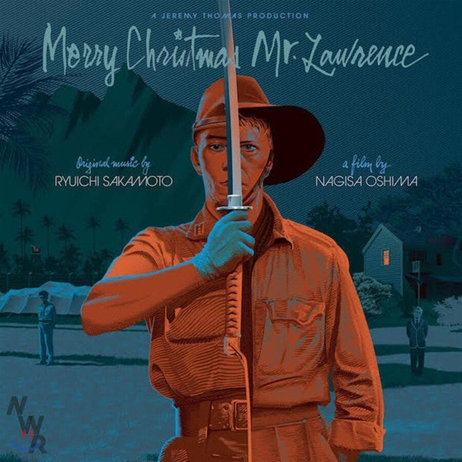
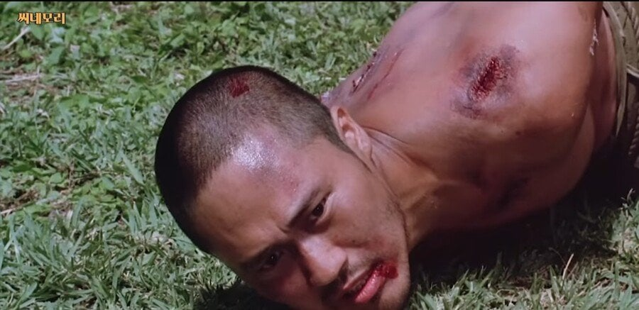
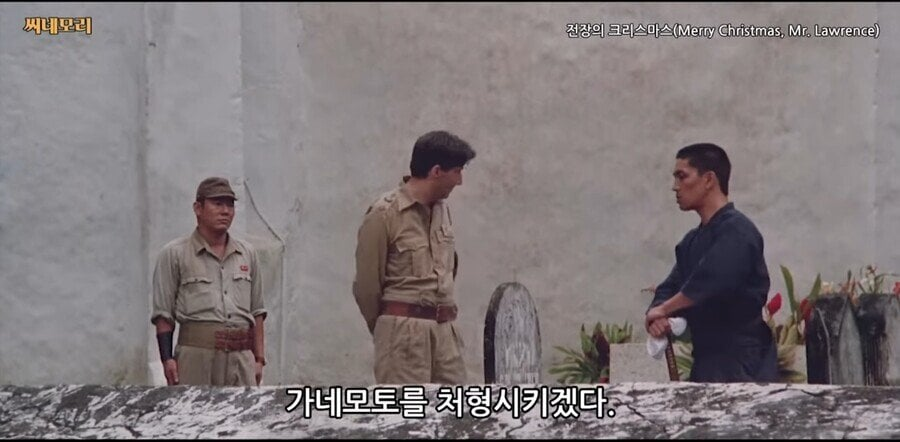
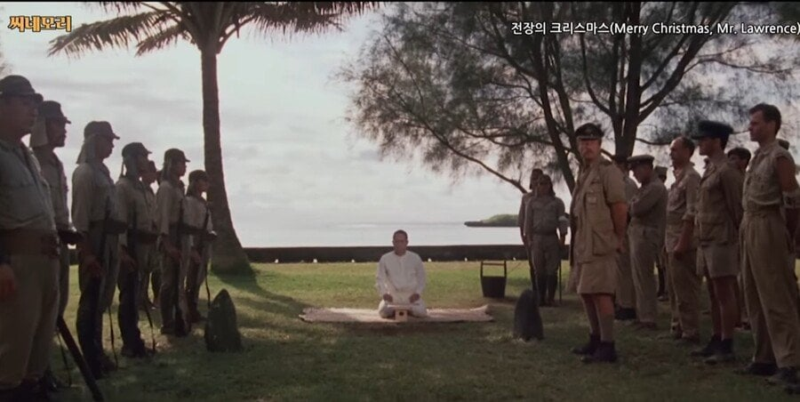
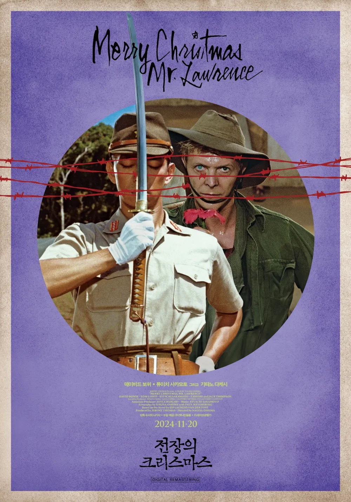

전장의 크리스마스, 1983년에 개봉한 일본군과 연합군의 사랑을 다룬 퀴어 영화로

해당 영화에서 '가네모토 (金本)'라는 일본군 소속 조선인 군속이 등장하는데....

문제는 해당 캐릭터가 네덜란드군 포로를 덮친 혐의로 사형 판결을 받고

할복으로 생을 마감하는 장면이 나온다.

해당 장면 때문에 대한민국에서는 극장 개봉이 물건너가고 DVD로만 출시됐으나....
꽤 오랜 시간이 지난 2024년 11월 20일, 정식으로 개봉했다고 한다.

오드아이라 데이비드 보위인줄